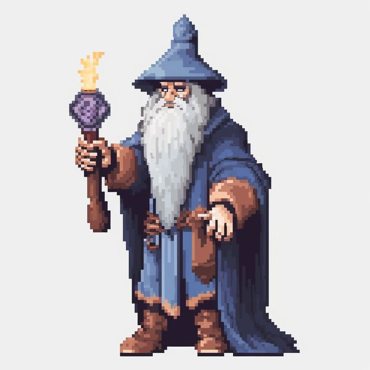
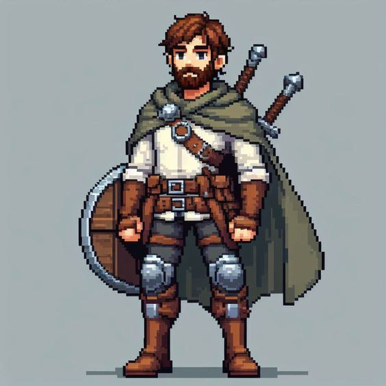
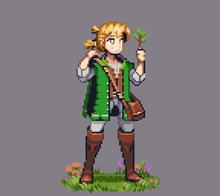

Our Origins
The team behind the Void.

Grand Magus Ramyak
Lead Architect
Weaver of spells and code, shaping the very fabric of the Arcania engine.

Knight Commander
Backend Guardian
Defending the servers from void attacks and ensuring database stability.

Master Bard
UI/UX Enchanter
Crafting visual harmonies that guide travelers through the realms.
The Timeline of Destiny
The Awakening
The first lines of code were inscribed, laying the foundation of the Codex.
The Great Refactoring
A chaotic era where files were scattered, later brought to order by the Antigravity principles.
The Void Integration
Chests of unknown origin were discovered, bringing untold riches to explorers.